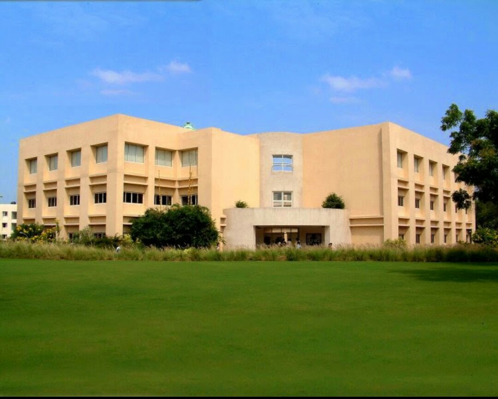
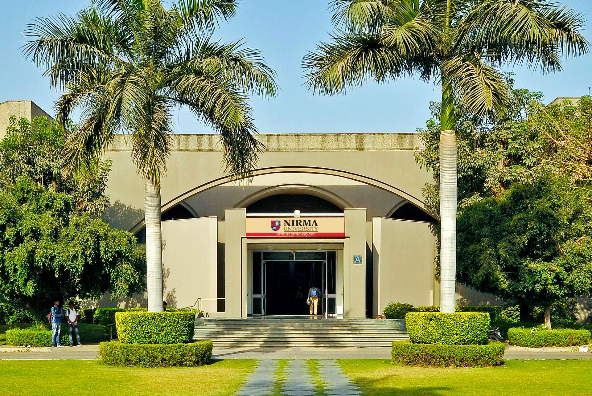
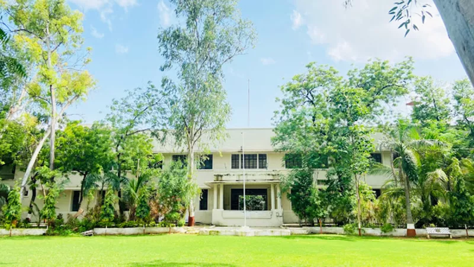
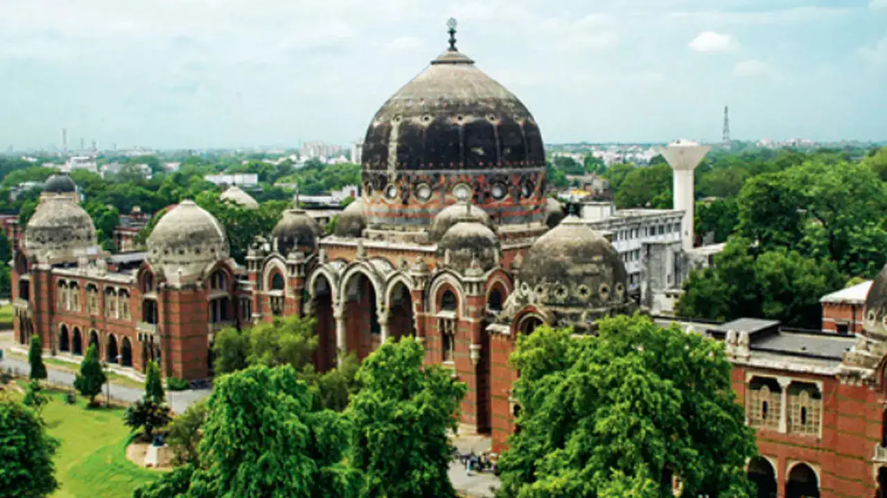
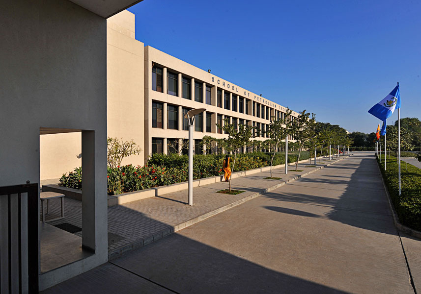
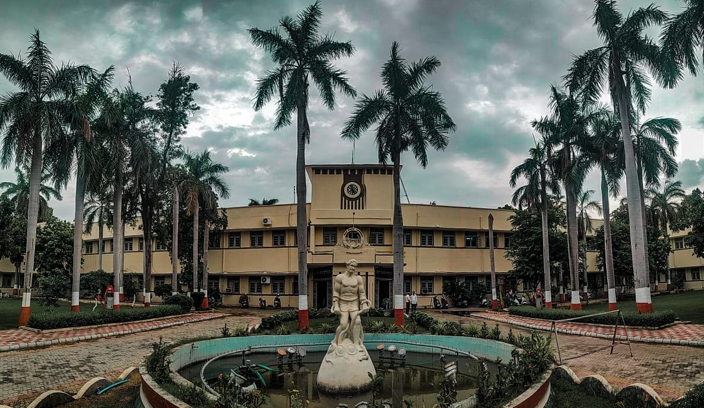
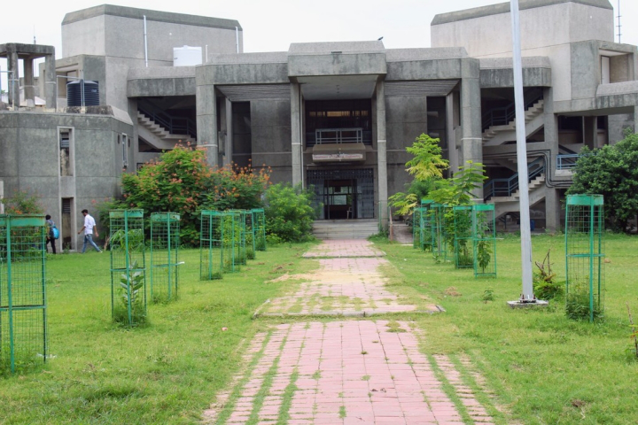
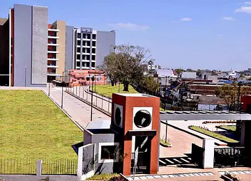
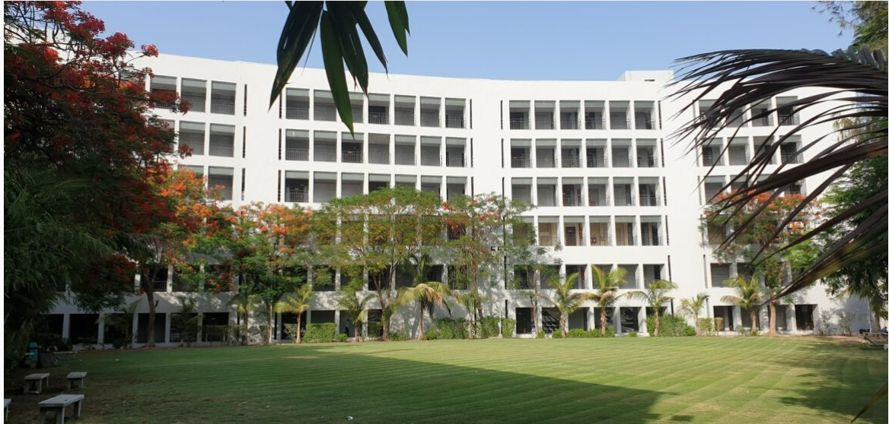

DA-IICT
-
DAIICT (Dhirubhai Ambani Institute of Information and Communication Technology)
Established: 2001
Location: Gandhinagar, Gujarat, India.
Campus: Sprawling 50-acre campus with modern infrastructure.
- Academic Programs:
Undergraduate: B.Tech (ICT, CS, AI)
Postgraduate: M.Tech (ICT), PhD
-
Research Initiatives: Focus on AI, blockchain, and cybersecurity.
Industry Collaborations: Partnerships with Google, Microsoft, and IBM for research.
-
For more detailed and updated information, you can visit the official DA-IICT website.
Nirma University
-
Nirma University
Established: 2003
Location: Ahmedabad, Gujarat
Campus: 110-acre campus with state-of-the-art facilities.
- Academic Programs:
Undergraduate: B.Tech, BBA, B.Pharm
Postgraduate: M.Tech, MBA, M.Pharm, PhD
-
Research Initiatives: New center for sustainable energy (2024).
Industry Tie-ups: Collaborations with DRDO and ISRO.
Infrastructure Expansion: New management block added in 2025.
-
For more detailed and updated information, you can visit the official Nirma University website.

DDU
-
Dharmsinh Desai University (DDU)
Established: 1968 as Dharmsinh Desai Institute of Technology (DDIT); attained full university status in 2005.
Location: Nadiad, Gujarat, India.
- Academic Programs:
Undergraduate: B.Tech, BCA, BDS
Postgraduate: M.Tech, MCA, MDS, M.Pharm
-
Recognition: Approved by UGC, AICTE, NAAC, NBA, and AIU.
Research Initiatives: DDU launched a research project on 6G wireless communication and is actively recruiting for it. The university opened admissions for 2024-25 across engineering, pharmacy, and medical programs. It is also enhancing infrastructure by upgrading labs and recruiting new faculty members.
-
For more detailed and updated information, you can visit the official DDU website.
LDCE
-
LD College of Engineering (LDCE)
Established: 1948
Location: Ahmedabad, Gujarat
Campus: Urban campus with strong industry connections.
- Academic Programs:
Undergraduate: B.Tech (Civil, Mechanical, Electrical, etc.)
Postgraduate: M.Tech, PhD
-
Research Initiatives: Smart city and IoT research lab (2024).
Industry Collaborations: Partnerships with L&T and Tata Group.
Infrastructure Expansion: Renovated labs and workshops
-
For more detailed and updated information, you can visit the official LDCE website.


MSU
-
Maharaja Sayajirao University(MSU)
Established: 1949
Location: Vadodara, Gujarat, India.
Campus: 275-acre campus with heritage buildings.
- Academic Programs:
Undergraduate: B.Tech, B.Sc, BBA, BFA
Postgraduate: M.Tech, MBA, M.Sc, PhD
-
Research Initiatives: New biotechnology research center (2025).
International Collaborations: MoUs with European universities.
Infrastructure Expansion: Upgraded library and hostels.
-
For more detailed and updated information, you can visit the official MSU website.
PDEU
-
Pandit Deendayal Energy University(PDEU)
Established: 2007
Location: Gandhinagar, Gujarat, India.
Campus: 100-acre energy-focused campus.
- Academic Programs:
Undergraduate: B.Tech (Petroleum, Renewable Energy)
Postgraduate: M.Tech, MBA (Energy), PhD
-
Research Initiatives: New solar energy research lab (2025).
Global Collaborations: Tie-ups with Texas A&M and IITs.
Infrastructure Expansion: New innovation center.
-
For more detailed and updated information, you can visit the official PDEU website.


BVM
-
Birla Vishvakarma Mahavidyalaya(BVM)
Established: 1948
Location: Vallabh vidhyanagar, Anand, Gujarat
Campus: 64-acre campus with strong alumni network.
- Academic Programs:
Undergraduate: B.Tech (Mechanical, Civil, EC, etc.)
Postgraduate: M.Tech, PhD
-
Research Initiatives: Advanced materials research lab (2024).
Industry Collaborations: Partnerships with Adani and Reliance.
Infrastructure Expansion: New auditorium and hostels.
-
For more detailed and updated information, you can visit the official BVM website.
VGEC
-
Vishwakarma Government Engineering College(VGEC)
Established: 1955
Location: Ahmedabad, Gujarat
Campus: 20-acre campus with modern labs.
- Academic Programs:
Undergraduate: B.Tech (Mechanical, IT, EC, etc.)
Postgraduate: M.Tech
-
Research Initiatives: Focus on robotics and automation.
Industry Partnerships: Collaboration with Siemens and Bosch.
Infrastructure Expansion: New smart classrooms (2024).
-
For more detailed and updated information, you can visit the official VGEC website.


IIT-RAM
-
Institute of Infrastructure Technology Research and Management(IITRAM)
Established: 2013
Location: Ahmedabad, Gujarat
Campus: 25-acre tech-enabled campus with smart infrastructure
- Academic Programs:
Undergraduate: B.Tech (Civil, Mechanical, Electrical Engineering)
Postgraduate: M.Tech (Infrastructure Engineering, Smart City Technologies)
Doctoral: PhD (Sustainable Infrastructure, Urban Planning)
-
Launched Gujarat's first AI-powered Smart Infrastructure Lab
Signed MOU with Japanese firms for sustainable urban tech research
Introduced new M.Tech in Smart City Technologies program
Upgraded Earthquake Simulation Center with 3D modeling capabilities
-
For more detailed and updated information, you can visit the official IITRAM website.
Adani University
-
Adani University
Established: 2022
Location: Shantigram, Ahmedabad, Gujarat
Campus: 100-acre smart campus with solar-powered infrastructure.
- Academic Programs:
Undergraduate: B.Tech (AI, Cyber Security, Renewable Energy)
Postgraduate: MBA (Energy & Infrastructure), M.Tech (Energy Systems)
Doctoral: PhD (Energy, Sustainability)
-
Industry Integration: Curriculum co-designed with Adani Group sectors (Ports, Logistics, Energy).
Research Initiatives: Launched Center for Green Hydrogen Research (2024).
Global Collaborations: Partnerships with MIT Sloan (USA) and NTU Singapore.
Placements: 100% internship guarantee in Adani Group companies.
-
For more detailed and updated information, you can visit the official Adani University website.
